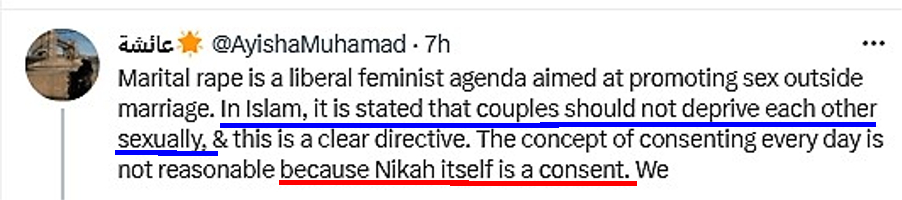

An Islamic Apologist Ayisha Muhamad wrote:
Marital rape is a liberal feminist agenda aimed at promoting sex outside marriage. In Islam, it is stated that couples should not deprive each other sexually, & this is a clear directive. The concept of consenting every day is not reasonable because Nikah itself is a consent.

Our Response:
In an Islamic society, the CONSENT of a woman means nothing.
An Islamic society makes a girl so weak that she cannot survive without giving the so-called "consent" to the UNJUST CONDITIONS of Islamic Sharia.
It is similar to that a slave girl has to willingly or unwillingly accept her fate (i.e. the owner can rape her without her consent, and after fulfilling his lust in a Shia MUTAH type TEMPORARY sexual relationship, he can sell her to another master. And this new master will again rape her and then sell her to the 3rd master ....)
Islamic apologists claim that marriage is only a CONTRACT. But this is only a deception, while the reality is, an Islamic society does not give this RIGHT to a girl, to "Stipulate the Conditions" of this contract according to her will.
An Islamic society compels and blackmails a girl into this: either she accepts the UNJUST Marriage Conditions (as stipulated by Sharia), or NOT to marry at all.
At the same time, the combination of "Rules of Islamic Sharia + Pressure of Islamic Society" make sure that a girl stays weak enough that she cannot rebel and challenge these unjust conditions, and cannot survive alone. She cannot move freely outside her home, she cannot do a job freely outside. She needs a mahram male's assistance everywhere. (Note: Only today a Muslim girl may have some chance to get an education and get a good job and may survive alone, but for the last 1400 years, she had no chance to survive alone).
The net result is, a girl has to willingly or unwillingly give the so-called "consent" to all the UNJUST CONDITIONS of Sharia regarding the so-called marriage contract.
2nd Part: Islam allows a husband to refuse to have sex with his wife for his entire life (He only needs to keep paying the maintenance money)
Moreover, Ayisha Muhamad also claimed:
In Islam, it is stated that couples should not deprive each other sexually
This is also totally wrong.
In Islam, a husband has complete sexual access to his wife and may exercise his right by force if he wants to, and may beat her if she refuses to. But the contrary is not true.
A wife does NOT have complete sexual access to her husband. A wife cannot compel her husband to have sex with her, she cannot use violence to discipline a husband who is reluctant to have sex. A man may withhold himself from his wife when his wife has a clear desire for sex.
A husband only has to keep paying the maintenance money. After that, no one can compel him to do sex with his wife. And neither the wife nor any Islamic court can compel him to divorce his wife, even if he refuses to have sex with her for years (or for his entire life).
Fatwa from Dar-ul-Ifta Deoband (link):
Question:If husband and wife do not do sex, in how many days their Nikah will be broken?
Answer:
Nikah does not break by not doing intercourse, even if they do not have sex the whole of their life, but by doing so the husband will be violating her due rights.
There are traditions that prior to the caliphate of Umar, Muslim warriors stayed away from their wives for long periods of time (maybe years). But when Umar became caliph, he consulted his daughter Hafsa and asked her how long a wife could stay without her husband. And she told it may be 4 months to 6 months. After that, Umar was the first one who stipulated that Muslim warriors should not be sent to the fronts for so long that they were separated from their wives for more than 6 months (Reference: Mufti Ebrahim Desai)
Please also remember, despite the recommendation by Umar about 6 months, still it is not a part of Islamic Sharia, while it was only Muhammad who was allowed to tell if Allah made something a part of Sharia or not.
Blackmailing the wives by showing ill-treatment and aversion towards them
Please remember:
- Muslim Husbands can use these tactics in order to compel their wives to accept all of their demands, even if they are unjust.
- Muhammad/Allah already practically 'abrogated' verse 4:3 of doing 'Adl (Justice)' with all wives.
- And the new verse 4:128-129 is a license for husbands to show aversion, ill-treatment and desertion towards their wives, and thus compel them to give away their rights in the name of the settlement. And the reason for this license is that men are not able to do 'Adl (justice) with them, even if they wish to do it.
(Quran 4:128-129) And if a woman fears from her husband contempt or evasion, there is no sin upon them if they make terms of settlement between them (i.e. woman agrees upon leaving some of her rights) … And you will never be able to do Justice (Arabic: تَعْدِلُوْا) between wives, even if you should strive [to do so].
For more details, please read our article: Muhammad's journey from 4 marriages to 9 marriages with the help of Revelation
Fatwa about Marital Rape being Halal Allah
Here is a Fatwa. Translation for those who can't read Arabic:
Question: If a right hand possession (female slave) refuses to have sex with her master, is it permissible to compel her by force?
Answer: Praise be to Allah, and may prayers and peace be upon the Messenger of God and his family and companions. It is better for a Muslim to occupy himself with what concerns him of the rulings of his religion, and to invest his time and energy in seeking knowledge that will benefit him. The meaning of knowledge is action. Knowledge that does not facilitate action, it is not good to search for. Among that are issues related to the ownership what the right hand possess (slaves); There is no use for it in this era.
With regard to the question: If the wife is not permitted to refrain from intimate relations with her husband except with a valid excuse, then it is more so not permissible for the right hand possession to refrain from intimate relations with her master except with a valid excuse; he has more right to sex with her through possessing her than the man having intercourse with his wife through the marriage contract; Because the ownership of the right hand possession is complete ownership, so he owns all her benefits, while marriage contracts only grant him only the ownership intended through the marriage contract so it is a restricted form of ownership.
If the wife or the right hand possession refuses to have sex without a legitimate excuse, then the husband or the master may force her to do so. However, he should take into account her psychological state, and treat her kindly. Kindness in all matters is desirable, as the prophet, may God’s prayers and peace be upon him, said: “Kindness is not found in anything but that it beautifies it, and it is not removed from anything except that it disgraces it.” (Narrated by Muslim).
Allah knows best.
Read this article in Image Format


 Hassan Radwan
Hassan Radwan
{kind=link}